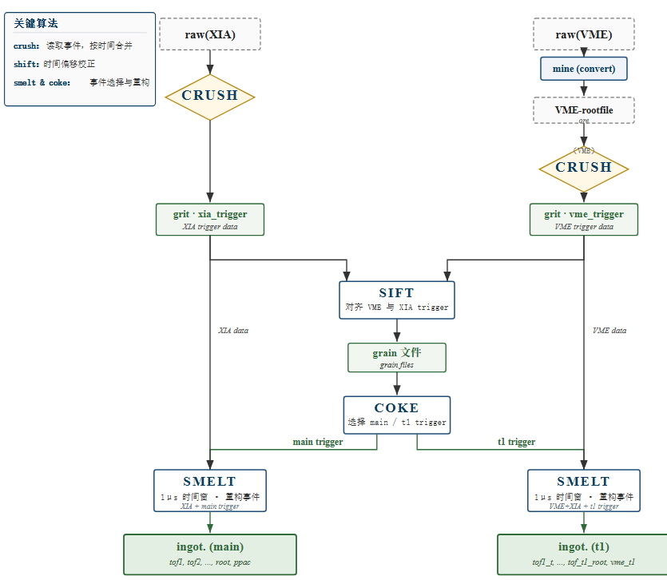
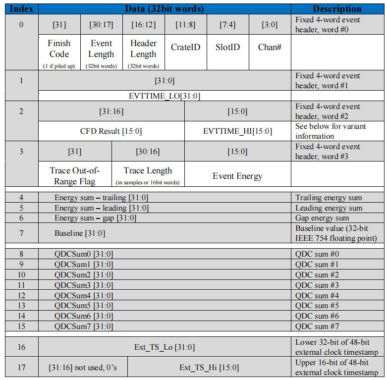
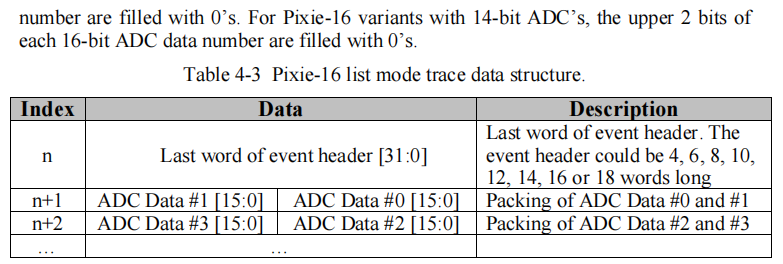
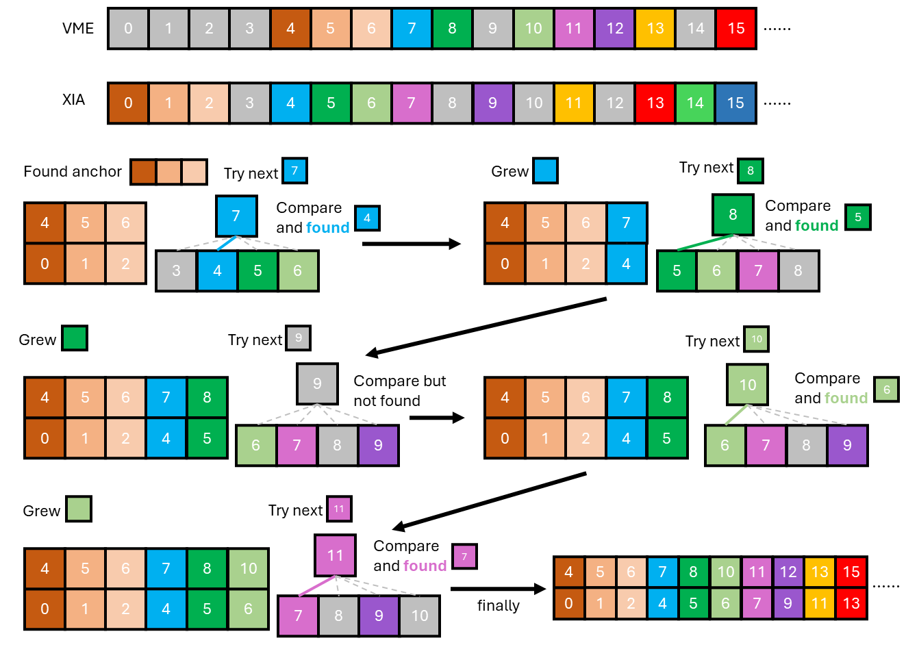

数据预处理 （forgerib）
forgerib 用于预处理实验数据，包含以下功能：
- 数据解码 （crush）：解码XIA获取的数据，在解码的同时拆分，映射到对应的探测器。同时拆分映射VME探测器。
- XIA和VME的时间对齐 （sift）：得到对应事件的Entry数
- 提取触发 （coke）
- 利用对应的触发，重建事件。

数据解码 （crush）
XIA 中的事件是紧凑排列的，每个事件是独立的，都以固定的 4*4 字节(byte)开头，作为事件头。事件头中包含了机箱、插件、通道用于定位硬件位置，也包含了触发信号的能量、时间等物理信息，以及头部长度、事件长度等结构信息.


需要注意的是本次实验中有一些损坏的插件，可能会一些带有瑕疵的二进制数据，目前发现主要有两种形式：
- 事件头部的第 2 字节、第 10 字节的最高位被置为 1。
- 第 2 字节的最高位是描述事件头部长度的一部分，目前主要观察到的是本来是长度是 4 的置位后变成 12，和事件长度、波形长度不自洽（正常来说，事件长度=波形长度/2+头部长度），所以会观察到波形长度位 0，头部长度为 12，事件长度为 4 的事件。目前的处理方法是发现波形长度为 0，头部长度为 12，事件长度为 4 的事件，直接将头部长度修正为 4。
- 第 10 字节是描述时间戳高位的，最高位为 1 需要十几天才能达到，出现在本次实验中必然是错误的。目前的解决方法是发现时间戳最高位为 1 就置为 0。
- 一个事件后紧跟着一个字节的 0. 目前解决方法是跳过一个字节。
XIA和VME的时间对齐 （sift）
Note
本次实验中，使用XIA的逻辑插件输出10MHz的时钟信号接入VME的v830插件，用于两系统之间的对齐。
由于XIA中直接记录了VME的trigger,同时VME的trigger进行了busy保护，在理论上可以实现VME事件和XIA记录的VME-trigger一一对应。 实际上XIA和VME都会偶尔丢失事件，尤其是VME获取在计数率比较高的时候。 绝大部分的事件都是有对应的，VME计数率低于500的时候是99%，接近1000的时候为90%以上，所以我们可以从大部分好的事件上做文章。 另一方面，对应的事件之间的时间差总是在极小的窗口内。比如说事件 A 和事件 B 在两边都有记录，那么 XIA 中 A、B 的时间差，于 VME 中 A、B 的时间差应该是非常 接近的（实验前测试结果在50*100ns以内），分析代码中 认为在时间差 10000 ns 以内都算是对应事件。

上图给出了对齐的大致流程，为了方便叙述，这里定义 VME 中事件 \(i\) 和事件 \(j\) 的时间差为 \(t_{i, j}^v\)，XIA 中的事件 \(i\) 和 事件 \(j\) 的时间差为 \(t_{i,j}^x\)。
- 找到两套获取系统中的锚点，即连续三个事件一一对应，或者说三个事件之间的时间差一一对应。以上图为例，即满足 \(t^v_{4,5} = t^x_{0,1}\) 且 \(t^v_{5,6} = t^x_{1,2}\);
- 找到锚点后，尝试 VME 下一个事件，寻找 XIA 中时间差接近的。以上图为例：
- 尝试 VME 事件 7，计算 \(t^v_{6,7}\)；
- XIA 中计算 \(t^x_{2,3}\) 到 \(t^x_{2,6}\)；
- 对比发现 \(t^v_{6,7} \approx t^x_{2,4}\)，认为 VME 事件 7 和 XIA 事件 4 是同一个事件；
- 图示仅对比了 XIA 中 4 个事件，实际对比 10 个事件；
- 如果下一个 VME 事件在若干个（实际是 10 个）XIA 事件中没有对应的，舍弃这个 VME 事件，尝试下一个事件。以上图为例，VME 事件 9 没有对应的事件，舍弃后尝试事件 10，发现有对应的，记录并尝试下一个 VME 事件；
- 如果连续多个 VME 事件都找不到对应的 XIA 事件（系统遇到某种跳变），回到第一步，重新寻找锚点。
实际效果(由于VME启动后就会有vme_trigger，vme事件数通常大于xia事件数)：
经过以上步骤，得到了一个 VME 和 XIA 事件的对照表（对应是事件的Entry序号），此表保存在 grain 目录下，以供后续重组事件使用。
提取触发 （coke）
分析发现，实验中的XIA记录的main_trigger的通道效率，由于该插件的体质原因只有90%左右。 但是丢失的10%其实已经被记录下来了，如果之间使用main_trigger重建事件，就会之间损失10%的事件。 以run-60为参考进行统计：
| XIA主trigger数 | vme和XIA对齐事件数（不卡vme阈值） | vme和XIA对齐事件数（不卡vme阈值），同时要求XIA有主trigger | ppac0阳极事件数 |
|---|---|---|---|
| 26426630 | 189007 | 172845 | 28916352 |
同时以注意到 \(26426630/28916352 = 0.914\)，\(172845/189007 = 0.914\)，说明记录main_trigger的通道效率为91.4%, 很大程度上低于PPAC插件的通道效率。
使用ppac0阳极事件数作为主触发，重建事件：
| ppac0阳极事件数 | vme和XIA对齐事件数（不卡vme阈值） | vme和XIA对齐事件数（不卡vme阈值），同时要求XIA有ppac0阳极触发 | XIA主trigger数，同时要求XIA有ppac0阳极触发 |
|---|---|---|---|
| 28916352 | 189007 | 111756 | 25666122 |
此时vme事件数大大降低，这也可以理解，这是由于vme中有很多噪声触发，并没有束流信号。
因此需要对比卡vme阈值之后的效果，目前卡vme阈值之后，vme和xia对齐的事件数变为118439
使用ppac0阳极事件数作为主触发，重建事件：
| ppac0阳极事件数 | vme和XIA对齐事件数（卡vme阈值） | vme和XIA对齐事件数（卡vme阈值），同时要求XIA有ppac0阳极触发 | XIA主trigger数，同时要求XIA有ppac0阳极触发 |
|---|---|---|---|
| 28916352 | 118439 | 77894 | 25666122 |
使用main_trigger作为主触发，重建事件：
| main_trigger事件数 | vme和XIA对齐事件数（卡vme阈值） | vme和XIA对齐事件数（卡vme阈值），同时要求XIA有main_trigger触发 | ppac0阳极事件数，同时要求XIA有main_trigger触发 |
|---|---|---|---|
| 26426630 | 118439 | 107872 | 25666122 |
组装触发事件 （smelt）
根据decode 数据，初步设置提取hit结构时的阈值，同时根据初步pid拟合的系数判断最低阈值：
| layer | 正面阈值 | 背面阈值 | 参考阈值/(MeV) |
|---|---|---|---|
| t0d1 | 150 | 450 | 0.21 |
| t0d2 | 200 | 200 | 2.00 |
| t0d3 | 150 | 150 | 1.36 |
| t0d4 | 50 | 50 | 1.20 |
| t0s | 100 | 100 | 100 |